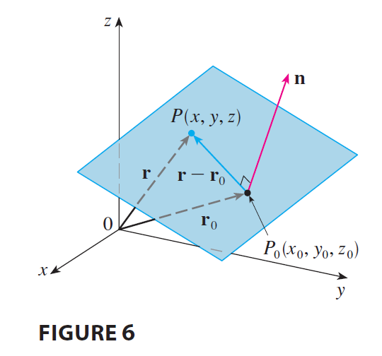

Although a line in space is determined by a point and a direction, a plane in space is more difficult to describe. A single vector parallel to a plane is not enough to convey the “direction” of the plane, but a vector perpendicular to the plane does completely specify its direction. Thus a plane in space is determined by a point \(P_0(x_0, y_0, z_0)\) in the plane and a vector n that is orthogonal to the plane. This orthogonal vector n is called a normal vector.

Let \(P(x, y, z)\) be an arbitrary point in the plane, and let \(\mathbf{r}_0\) and r be the position vectors of \(P_0\) and \(P\). Then the vector \(\mathbf{r} - \mathbf{r}_0\) is represented by \(\vec{P_0P}\). The normal vector n is orthogonal to every vector in the given plane. In particular, n is orthogonal to \(\mathbf{r} - \mathbf{r}_0\) and so we have \[ \mathbf{n} \cdot (\mathbf{r} - \mathbf{r}_0) = 0 \tag{5} \] which can be rewritten as \[ \mathbf{n} \cdot \mathbf{r} = \mathbf{n} \cdot \mathbf{r}_0 \tag{6} \] Either Equation 5 or Equation 6 is called a vector equation of the plane.
To obtain a scalar equation for the plane, we write \(\mathbf{n} = \langle a, b, c \rangle, \mathbf{r} = \langle x, y, z \rangle,\) and \(\mathbf{r}_0 = \langle x_0, y_0, z_0 \rangle\). Then the vector equation (5) becomes \[ \langle a, b, c \rangle \cdot \langle x - x_0, y - y_0, z - z_0 \rangle = 0 \] or \[ a(x - x_0) + b(y - y_0) + c(z - z_0) = 0 \]
A scalar equation of the plane through point \(P_0(x_0, y_0, z_0)\) with normal vector \(\mathbf{n} = \langle a, b, c \rangle\) is \[ a(x - x_0) + b(y - y_0) + c(z - z_0) = 0 \tag{7} \]
EXAMPLE 4 Find an equation of the plane through the point \((2, 4, -1)\) with normal vector \(\mathbf{n} = \langle 2, 3, 4 \rangle\). Find the intercepts and sketch the plane.
By collecting terms in Equation 7 as we did in Example 4, we can rewrite the equation of a plane as \[ ax + by + cz + d = 0 \tag{8} \] where \(d = -(ax_0 + by_0 + cz_0)\). Equation 8 is called a linear equation in \(x, y,\) and \(z\). Conversely, it can be shown that if \(a, b,\) and \(c\) are not all 0, then the linear equation (8) represents a plane with normal vector \(\langle a, b, c \rangle\).
EXAMPLE 5 Find an equation of the plane that passes through the points \(P(1, 3, 2), Q(3, -1, 6),\) and \(R(5, 2, 0)\).